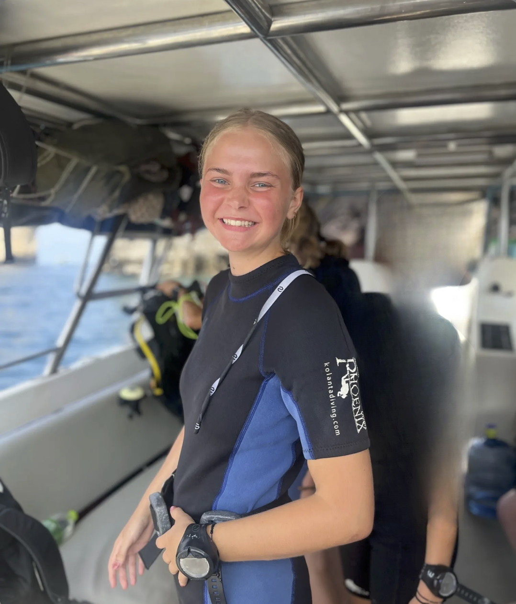

Rejsebreve fra tidligere elever
Læs med, når tidligere elever fortæller om oplevelser, fællesskab, undervisning og alt det, der sker, når man rejser ud sammen.

Jeg er blevet et modigere menneske
“Jeg blev overrasket over, hvor meget jeg udviklede mig på turen. Der var mange situationer, hvor jeg blev skubbet lidt ud af min komfortzone, men på en måde hvor jeg stadig følte mig tryg. Jeg lærte at sige mere ja, stole mere på mig selv og turde være mere åben over for nye mennesker og oplevelser.”
Læs mere
Mere end bare en rejse
“Det var ikke kun en rejse med flotte steder og fede oplevelser. Det var også et ophold, hvor jeg fik tid til at tænke over, hvad jeg gerne vil, og hvem jeg er sammen med andre. Undervisningen gav mening, fordi den hang sammen med det, vi oplevede undervejs.”
Læs mere
Jeg fik mere med hjem, end jeg havde regnet med
“Jeg havde nok tænkt, at det mest skulle handle om at rejse, opleve noget nyt og få et afbræk fra hverdagen. Og det gjorde det også. Men jeg blev faktisk overrasket over, hvor meget fællesskabet kom til at betyde.”
Læs mere
3 helt igennem fantastiske måneder i Sydamerika
“Jeg har oplevet de vildeste ting, set de flotteste ting og jeg har gjort det hele med den mest fantastiske gruppe og rejseleder og underviser. Man udvikler sig gennem de mange forskellige oplevelser og igennem den undervisning, man får undervejs.”
Læs mere
Jeg fandt hurtigt ud af, at jeg ikke var den eneste, der var nervøs
“Inden jeg tog afsted, var jeg virkelig spændt på, om jeg ville passe ind i gruppen. Men allerede de første dage fandt jeg ud af, at mange havde det på samme måde.”
Læs mere
Det blev et afbræk, jeg virkelig havde brug for
“Jeg tog afsted, fordi jeg havde brug for at komme lidt væk fra hverdagen og mærke noget andet. På rejsen fik jeg både nye oplevelser, nye venner og tid til at tænke over, hvad jeg egentlig gerne vil.”
Læs mere
Undervisningen gav mere mening, fordi vi var ude i verden
“Det fede var, at undervisningen ikke bare foregik i et lokale. Den hang sammen med det, vi oplevede undervejs. Når vi arbejdede med fællesskab, kommunikation eller mod, kunne man mærke det direkte i gruppen.”
Læs mere
Det bedste var alt det, man ikke kan planlægge
“Selvfølgelig var destinationerne og oplevelserne vilde. Men det bedste var næsten alt det, der opstod undervejs: samtalerne på lange busture, grinene over mærkelige situationer og følelsen af, at vi blev en gruppe.”
Læs mere
Jeg havde ikke forventet, at fællesskabet ville fylde så meget
“Jeg glædede mig mest til at se nye steder, men fællesskabet blev hurtigt det vigtigste. Det var rart at være sammen med andre, der også var åbne for at møde nye mennesker.”
Læs mere